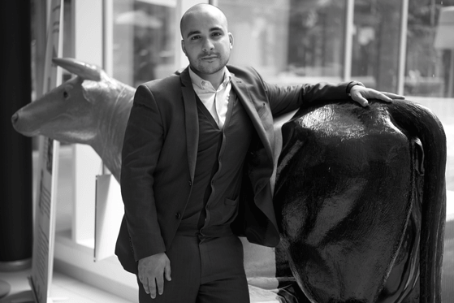

Bekende Twitteraars
14 Twitteraars vertellen over hun avonturen met het blauwe vogeltje.
Foto's © Johan Swinnen, 2016.
"Het is voor mij de koffiemachine waar ik grapjes maak met de collega’s" - @Eva_Mouton

"Ik ben bereid te betalen voor twitter" - @GeertNoels

"Onze koning op Snapchat? Dat zou toch tof zijn?" - @JillPeetersWX

"Twitter heeft mijn leven veranderd" - @LucColemont

"Wat moeten we anders? Allemaal Pokémons gaan vangen, of wat?" - @Wielemie
"Het geheim van 140 tekens op rijm" - @verschuerenmic1
"Het moet van een ranzige bar terug een gezellig café worden" - @vadderiVRT

"Wie geluk wilt oogsten, moet humor zaaien" - @jokevandevelde1
"Twitter is mijn virtuele studiedienst" - @kristofcalvo
"Door Twitter veel kennis en kennissen opgedaan" - @slk8500

"Dat je ermee moet oppassen, moet je mij niet vertellen" - @FranckenTheo

"Twitter is mijn megafoon" - @Youssef_Kobo

"Geen last van storende advertenties dankzij Tweetbot" - @vpieters

"Begonnen met twaalf keer meer volgers dan Christus" - @p_vanostaeyen